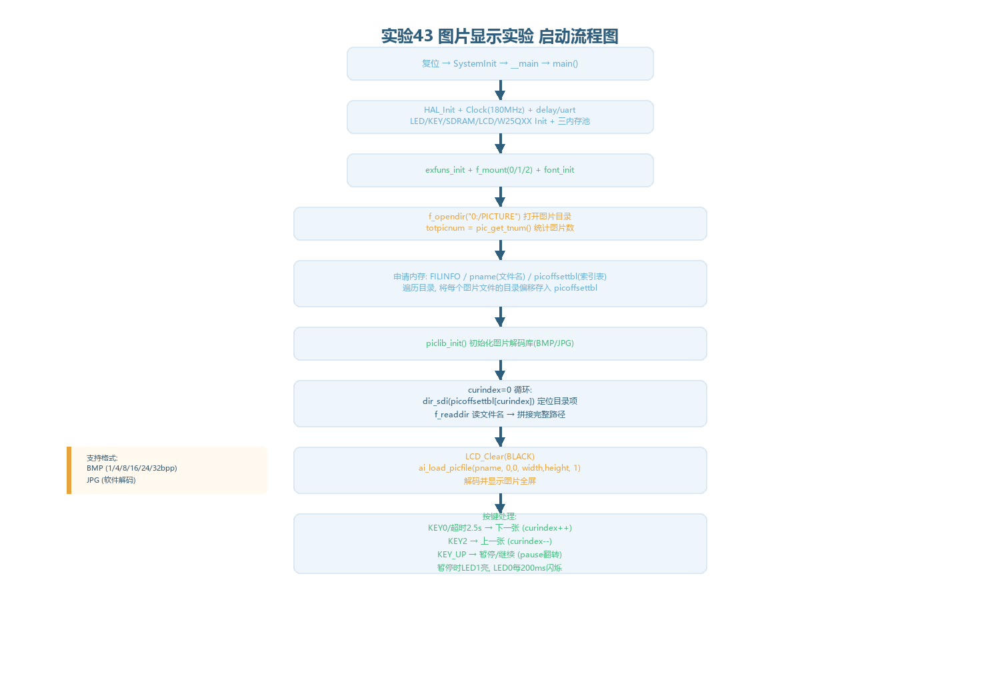
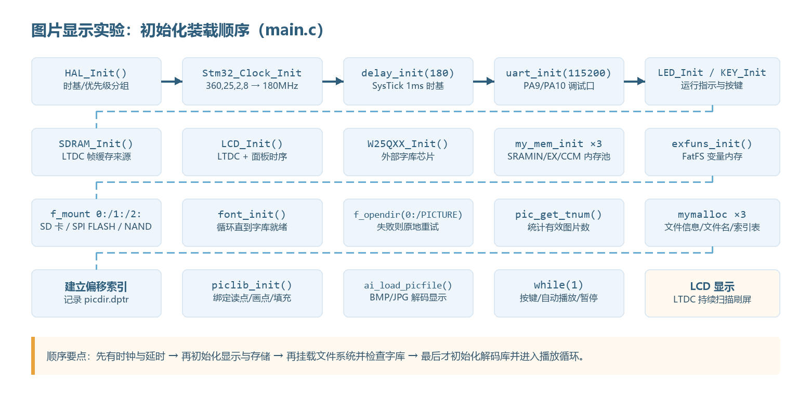
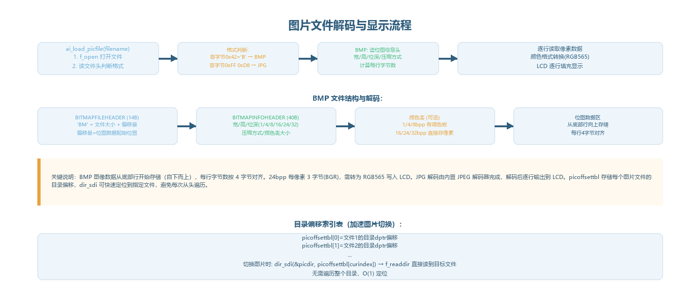
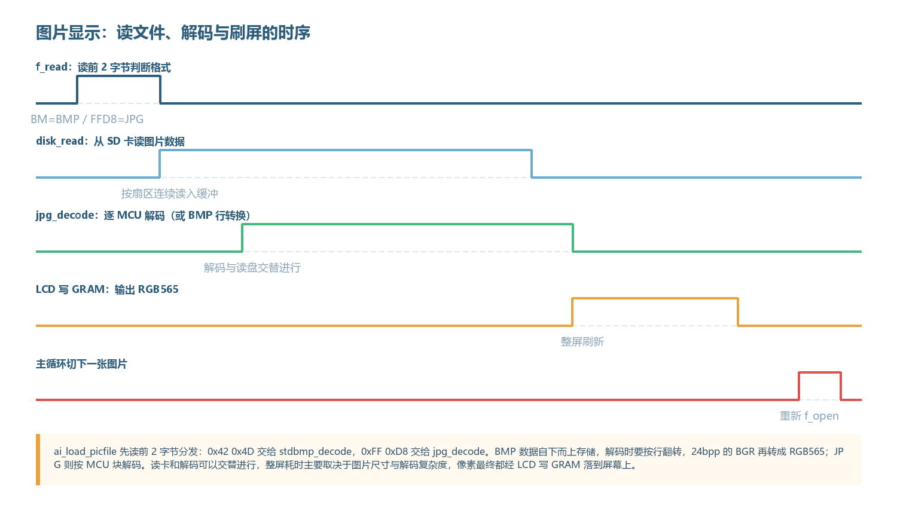
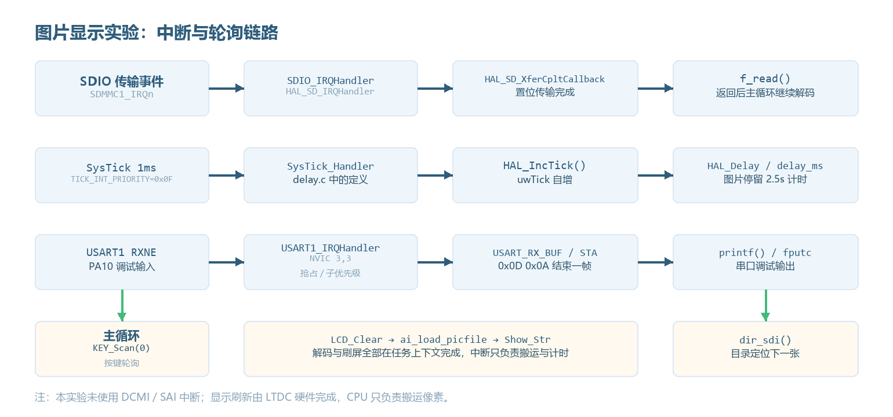

01 实验目标与硬件资源
实验43 在“LCD 显示 + SD 卡文件系统”基础上增加图片解码库 piclib。程序启动后先扫描 0:/PICTURE 目录，把所有可识别的图片文件记录成偏移索引表，然后逐张解码显示。BMP 由 stdbmp_decode 解码，JPG/JPEG 交给 TJPGD，GIF 由 gif_decode 处理。
| 资源 | 型号 / 引脚 | 在本实验中的作用 |
|---|---|---|
| MCU | STM32F429IGT6，180MHz | 运行解码、文件系统与主循环调度 |
| LCD | RGB 屏，LTDC + SDRAM 帧缓存 | 承载整屏图片与文件名叠加显示 |
| SD 卡 | SDIO / SDMMC1 | 存放 PICTURE 目录与图片文件 |
| SPI FLASH | W25Q256 | 存放字库与 FatFS 逻辑盘 1 |
| 按键 | KEY0 / KEY2 / KEY_UP | 下一张 / 上一张 / 暂停继续 |
| LED | LED0 / LED1 | 运行心跳 / 暂停指示 |
bmp_encode，也不涉及 DCMI 与 SAI。看到“图片显示不全/花屏”时优先怀疑帧缓存与解码窗口，而不是文件系统。02 工程目录与模块分工
工程沿用正点原子 HAL 库例程的分层：USER 放 main 与中断入口，SYSTEM 放时钟、延时、串口、内存池，HARDWARE 放 LCD/SDRAM/SDIO/KEY/LED/W25QXX，PICTURE 放图片解码，FATFS 与 MALLOC 提供文件系统与动态内存。
| 目录 / 文件 | 关键符号 | 说明 |
|---|---|---|
| USER/main.c | main | 初始化顺序、目录索引、主循环按键处理 |
| USER/stm32f4xx_it.c | SysTick_Handler | 非 OS 时只调用 HAL_IncTick |
| USER/system_stm32f4xx.c | SystemInit | 复位后设置向量表、FPU、时钟源 |
| CORE/startup_stm32f429xx.s | Reset_Handler | 取栈顶、跳 __main、建 C 运行环境 |
| SYSTEM/sys/sys.c | Stm32_Clock_Init | PLL 与总线分频，得到 180MHz |
| SYSTEM/delay/delay.c | delay_init / delay_us | SysTick 或 DWT 精确延时 |
| PICTURE/piclib.c | piclib_init / ai_load_picfile | 绑定画点、读点、填充函数并按格式分发 |
| PICTURE/bmp.c | stdbmp_decode | 16/24/32 位 BMP 逐行解码 |
| PICTURE/tjpgd.c | jpg_decode | JPEG 软解码 |
03 上电启动与 main 全貌

启动阶段可以分成四段：内核与外设基础（HAL、时钟、延时、串口、LED）、显示与存储（SDRAM、LCD、KEY、W25QXX）、内存与文件系统（三个内存池、FatFS 变量、挂载三个盘）、资源检查与业务装载（字库、PICTURE 目录、图片数量、动态内存、偏移索引）。
int main(void)
{
u8 res;
DIR picdir; // 图片目录对象
FILINFO *picfileinfo; // 文件信息缓冲区（动态申请）
u8 *pname; // 带路径的文件名
u16 totpicnum; // 有效图片总数
u16 curindex; // 当前显示索引
u8 key; // 键值
u8 pause = 0; // 暂停标记
u8 t; // 当前图片停留计时
u32 *picoffsettbl; // 目录偏移索引表
HAL_Init(); // 初始化 HAL 库与时基
Stm32_Clock_Init(360,25,2,8); // PLL：180MHz
delay_init(180); // 初始化延时函数
uart_init(115200); // 串口调试口
LED_Init(); // LED0/LED1
SDRAM_Init(); // 外部 SDRAM，LTDC 帧缓存
LCD_Init(); // LCD 面板与 LTDC
KEY_Init(); // 三个按键
W25QXX_Init(); // 外部 SPI FLASH（字库）
my_mem_init(SRAMIN); // 内部内存池
my_mem_init(SRAMEX); // 外部内存池
my_mem_init(SRAMCCM); // CCM 内存池
exfuns_init(); // FatFS 相关变量申请内存
f_mount(fs[0],"0:",1); // 挂载 SD 卡
f_mount(fs[1],"1:",1); // 挂载 SPI FLASH
f_mount(fs[2],"2:",1); // 挂载 NAND FLASH
... // 字库检查、开机提示、目录扫描与索引建立，见第 7、11 节
}
- 时钟必须最先：delay、UART 波特率、SDIO 时钟都依赖 180MHz 主频。
- SDRAM 先于 LCD：LTDC 的帧缓存地址落在 SDRAM，未初始化就开显示会花屏或死机。
- 内存池先于 FatFS：
exfuns_init与f_mount内部要从内存池取块，池未建立会直接失败。 - piclib_init 最后：它只绑定画点/读点函数，依赖 LCD 已经可用。
04 启动文件与向量表
上电后 Cortex-M4 从 0x08000000 读取第一个字作为初始 MSP，第二个字作为 Reset_Handler 地址。启动文件同时定义堆栈大小与中断向量表，把 SystemInit、__main 串起来。
Stack_Size EQU 0x00000400 // 1KB 栈，启动阶段足够 Heap_Size EQU 0x00000200 // 0.5KB 堆（本工程主要用 mymalloc） AREA STACK, NOINIT, READWRITE, ALIGN=3 Stack_Mem SPACE Stack_Size __initial_sp AREA RESET, DATA, READONLY EXPORT __Vectors __Vectors DCD __initial_sp // 初始 MSP DCD Reset_Handler // 复位入口 DCD NMI_Handler DCD HardFault_Handler DCD MemManage_Handler DCD BusFault_Handler DCD UsageFault_Handler ... DCD SysTick_Handler // 1ms 时基 DCD USART1_IRQHandler // 串口接收
Reset_Handler PROC
EXPORT Reset_Handler [WEAK]
IMPORT SystemInit
IMPORT __main
LDR R0, =SystemInit
BLX R0 // 先做最小时钟/FPU/向量表配置
LDR R0, =__main
BX R0 // C 库初始化后跳到 main
ENDP
- 按 scatter 文件把
.data从 Flash 搬到 RAM。 - 把
.bss段清零，保证全局变量初值为 0。 - 初始化 C 库后调用
main；因此main里的全局对象已经可用。
05 SystemInit 与 HAL_Init
SystemInit 由启动文件调用，负责把向量表放到 Flash 起始地址、使能 FPU、打开指令/数据 Cache 与预取，并选择 HSI 作为临时时钟。此时还没有配置 PLL，主频仍是 16MHz。真正的 180MHz 由 main 里的 Stm32_Clock_Init 完成。
void SystemInit(void)
{
RCC->CR |= (1 << 0); // 打开 HSI
RCC->CFGR = 0x00000000; // 复位时钟配置
RCC->CR &= ~(1 << 24); // 关闭 PLL
RCC->CR &= ~(1 << 16); // 关闭 HSE
RCC->CR &= ~(1 << 28); // 关闭 PLLI2S
#ifdef VECT_TAB_SRAM
SCB->VTOR = SRAM_BASE | VECT_TAB_OFFSET;
#else
SCB->VTOR = FLASH_BASE | VECT_TAB_OFFSET; // 向量表在 Flash
#endif
#if (__FPU_PRESENT == 1) && (__FPU_USED == 1)
SCB->CPACR |= ((3UL << 10*2)|(3UL << 11*2)); // 使能 CP10/CP11
#endif
... // 指令 Cache / 数据 Cache / 预取使能
}
HAL_StatusTypeDef HAL_Init(void)
{
HAL_NVIC_SetPriorityGrouping(NVIC_PRIORITYGROUP_4); // 4 位抢占，0 位子优先级
HAL_InitTick(TICK_INT_PRIORITY); // 默认 1ms SysTick
HAL_MspInit(); // 本工程为空实现
return HAL_OK;
}
TICK_INT_PRIORITY 为 0x0F，即最低优先级。这样任何外设中断都能打断时基更新，不会因为 HAL_Delay 卡住高优先级中断。SystemInit只保证 CPU 能跑 C 代码，不配置外设时钟树。HAL_Init只建立时基与中断分组，不配置任何 GPIO。- 外设时钟在各自
HAL_XXX_MspInit中使能，例如 LCD 的 LTDC、SDIO 的 SDMMC1。
06 时钟树与 SysTick 时基
外部晶振 25MHz，先除以 M=25 得到 1MHz 参考，再乘 N=360 得到 360MHz VCO，最后除以 P=2 得到 180MHz 系统时钟。Q=8 把 VCO 再分频得到 45MHz，供 USB/SDIO 等使用。AHB 不分频，APB1 为 45MHz，APB2 为 90MHz。
void Stm32_Clock_Init(u32 plln, u32 pllm, u32 pllp, u32 pllq)
{
HAL_StatusTypeDef ret = HAL_OK;
RCC_OscInitTypeDef RCC_OscInitStruct;
RCC_ClkInitTypeDef RCC_ClkInitStruct;
__HAL_RCC_PWR_CLK_ENABLE(); // 使能电源时钟
__HAL_PWR_VOLTAGESCALING_CONFIG(PWR_REGULATOR_VOLTAGE_SCALE1);
RCC_OscInitStruct.OscillatorType = RCC_OSCILLATORTYPE_HSE;
RCC_OscInitStruct.HSEState = RCC_HSE_ON; // 25MHz 晶振
RCC_OscInitStruct.PLL.PLLState = RCC_PLL_ON;
RCC_OscInitStruct.PLL.PLLSource = RCC_PLLSOURCE_HSE;
RCC_OscInitStruct.PLL.PLLM = pllm; // 25
RCC_OscInitStruct.PLL.PLLN = plln; // 360
RCC_OscInitStruct.PLL.PLLP = pllp; // 2 → 180MHz
RCC_OscInitStruct.PLL.PLLQ = pllq; // 8 → 45MHz
ret = HAL_RCC_OscConfig(&RCC_OscInitStruct);
RCC_ClkInitStruct.ClockType = RCC_CLOCKTYPE_HCLK | RCC_CLOCKTYPE_SYSCLK
| RCC_CLOCKTYPE_PCLK1 | RCC_CLOCKTYPE_PCLK2;
RCC_ClkInitStruct.SYSCLKSource = RCC_SYSCLKSOURCE_PLLCLK;
RCC_ClkInitStruct.AHBCLKDivider = RCC_SYSCLK_DIV1; // HCLK=180MHz
RCC_ClkInitStruct.APB1CLKDivider = RCC_HCLK_DIV4; // 45MHz
RCC_ClkInitStruct.APB2CLKDivider = RCC_HCLK_DIV2; // 90MHz
ret = HAL_RCC_ClockConfig(&RCC_ClkInitStruct, FLASH_LATENCY_5);
}
void delay_init(u8 SYSCLK)
{
HAL_SYSTICK_CLKSourceConfig(SYSTICK_CLKSOURCE_HCLK); // SysTick 用 HCLK
fac_us = SYSCLK; // 180：每微秒 180 个节拍
fac_ms = (u16)fac_us * 1000; // 每毫秒节拍数
}
void delay_us(u32 nus)
{
u32 ticks = nus * fac_us; // 计算需要的 SysTick 节拍
u32 told = SysTick->VAL;
u32 tnow, tcnt = 0;
while (1)
{
tnow = SysTick->VAL;
if (tnow != told)
{
if (tnow < told) tcnt += told - tnow; // 正常递减
else tcnt += SysTick->LOAD - tnow + told; // 跨过重装
told = tnow;
if (tcnt >= ticks) break;
}
}
}
- HAL_Init 里
HAL_InitTick配置 SysTick 为 1ms 中断，ISR 中HAL_IncTick递增uwTick。 HAL_Delay用uwTick做阻塞等待；delay_us直接读SysTick->VAL，不受中断影响。- 主循环每 10ms 调一次
KEY_Scan，所以按键去抖与显示节奏都由这个时基决定。
07 显示、存储与文件系统装载

三个盘都挂载成功后，程序进入字库自检：font_init() 会检查 SPI FLASH 中的字库是否可用，失败就原地闪烁提示。字库正常后才打印开机信息，并检查 0:/PICTURE 是否存在、图片数量是否为零。任何一步失败都会停在 while 循环里反复提示，而不是继续往下跑。
while (font_init()) // 字库不可用则死等 { LCD_ShowString(30,50,200,16,16,"Font Error!"); delay_ms(200); LCD_Fill(30,50,240,66,WHITE); delay_ms(200); } Show_Str(30,50,200,16,"阿波罗STM32F4/F7开发板",16,0); Show_Str(30,90,200,16,"KEY0:NEXT KEY2:PREV",16,0); Show_Str(30,110,200,16,"KEY_UP:PAUSE",16,0); while (f_opendir(&picdir,"0:/PICTURE")) // 目录不存在则死等 { Show_Str(30,170,240,16,"PICTURE文件夹错误!",16,0); delay_ms(200); LCD_Fill(30,170,240,186,WHITE); delay_ms(200); } totpicnum = pic_get_tnum("0:/PICTURE"); // 统计有效图片数 while (totpicnum == NULL) // 0 张也死等 { Show_Str(30,170,240,16,"没有图片文件!",16,0); delay_ms(200); LCD_Fill(30,170,240,186,WHITE); delay_ms(200); } picfileinfo = (FILINFO*)mymalloc(SRAMIN,sizeof(FILINFO)); // 目录项缓冲 pname = mymalloc(SRAMIN,_MAX_LFN*2+1); // 长文件名缓冲 picoffsettbl = mymalloc(SRAMIN,4*totpicnum); // 每张图一个 u32 偏移 while (!picfileinfo || !pname || !picoffsettbl) // 任一失败都停 { Show_Str(30,170,240,16,"内存分配失败!",16,0); delay_ms(200); LCD_Fill(30,170,240,186,WHITE); delay_ms(200); }
0: SD 卡、1: SPI FLASH、2: NAND FLASH。本实验图片固定从 0:/PICTURE 读取，FLASH 只用于字库。- 必须先
my_mem_init再mymalloc，否则返回 NULL。 picoffsettbl的大小是4 × totpicnum，索引项是u32的目录偏移，不是文件序号。- 目录扫描只认
f_typetell高四位为 0x50 的文件，即图片类；其他文件会被跳过。
08 图片解码时序与像素通道


ai_load_picfile 先做窗口越界检查，把显示区域记录到 picinfo，再按扩展名分发。BMP 走 stdbmp_decode：读出文件头与信息头，得到位深、压缩方式、宽高，然后按 4 字节对齐计算每行字节数，循环读一行、解一行、画一行。
u8 ai_load_picfile(const u8 *filename,u16 x,u16 y,u16 width,u16 height,u8 fast)
{
u8 res, temp;
if ((x+width) > picinfo.lcdwidth) return PIC_WINDOW_ERR; // 水平越界
if ((y+height) > picinfo.lcdheight) return PIC_WINDOW_ERR; // 垂直越界
if (width == 0 || height == 0) return PIC_WINDOW_ERR; // 窗口非法
picinfo.S_Height = height; // 记录显示窗口
picinfo.S_Width = width;
picinfo.S_YOFF = y;
picinfo.S_XOFF = x;
temp = f_typetell((u8*)filename); // 由扩展名判断格式
switch (temp)
{
case T_BMP: res = stdbmp_decode(filename); break; // 标准 BMP
case T_JPG:
case T_JPEG: res = jpg_decode(filename,fast); break; // TJPGD
case T_GIF: res = gif_decode(filename,x,y,width,height); break;
default: res = PIC_FORMAT_ERR; break; // 非图片
}
return res;
}
u8 stdbmp_decode(const u8 *filename)
{
...
color_byte = pbmp->bmiHeader.biBitCount / 8; // 2/3/4 字节每像素
biCompression = pbmp->bmiHeader.biCompression; // BI_RGB 或 BI_BITFIELDS
if ((picinfo.ImgWidth * color_byte) % 4) // 行必须 4 字节对齐
rowlen = ((picinfo.ImgWidth * color_byte) / 4 + 1) * 4;
else
rowlen = picinfo.ImgWidth * color_byte;
while (1)
{
res = f_read(f_bmp,databuf,readlen,(UINT*)&br); // 每次读一块
if (br != readlen) readlen = br; // 最后一块可能不足
if (res || br == 0) break; // 读完或出错
for (i = 0; i < rowpix; i++) // 逐像素取色
{
if (color_byte == 3) // 24 位：BGR
color = ((u16)databuf[i*3+2] << 11)
| ((u16)databuf[i*3+1] << 5)
| (databuf[i*3] >> 3);
...
pic_phy.draw_point(x+tx, y+ty, color); // 绑定到 LCD_Fast_DrawPoint
}
}
}
- BMP 不做压缩，解码成本几乎全在
f_read与逐点写屏；480×800 的 24 位图约 1.1MB。 - 行对齐按 4 字节补齐，少算一个填充字节就会整幅图斜切。
piclib_init把draw_point绑定到LCD_Fast_DrawPoint，避免每点都做窗口设置。- JPEG 用 TJPGD 分 MCU 解码，内存占用比整幅位图小，但 CPU 时间更长。
09 中断链路与优先级

void SysTick_Handler(void)
{
HAL_IncTick(); // 只递增 uwTick，不做业务
}
void USART1_IRQHandler(void)
{
u8 res;
if (__HAL_UART_GET_IT_SOURCE(&g_uart1_handle,UART_IT_RXNE) != RESET)
{
res = (u8)(g_uart1_handle.Instance->DR & 0xFF); // 读一个字节
if ((g_usart_rx_sta & 0x8000) == 0) // 上一帧已处理
{
if (g_usart_rx_sta & 0x4000) // 已收到 0x0D
{
if (res != 0x0A) g_usart_rx_sta = 0; // 必须是 0x0D 0x0A
else g_usart_rx_sta |= 0x8000; // 标记一帧完成
}
else
{
if (res == 0x0D) g_usart_rx_sta |= 0x4000;
else
{
g_usart_rx_buf[g_usart_rx_sta & 0x3FFF] = res;
g_usart_rx_sta++;
if (g_usart_rx_sta > (USART_REC_LEN-1)) g_usart_rx_sta = 0;
}
}
}
}
}
SDIO 的完成通知由 HAL 的 HAL_SD_IRQHandler 处理，最终把传输完成标志置位，f_read 在任务上下文继续往后走。整个显示流程没有 DMA 刷屏，LTDC 只负责按帧缓存自动扫描，CPU 通过画点函数改内存。
- SysTick 优先级最低（0x0F），任何外设都能抢占，保证 SDIO 不丢事件。
- USART1 设为 3,3：低于 SDIO（2,0），串口大流量不会拖慢文件读。
- 图片解码与写屏全部在主循环完成，避免在中断里做数百毫秒的耗时操作。
10 主循环与播放控制
while (res == FR_OK) // 打开图片目录成功 { dir_sdi(&picdir,picoffsettbl[curindex]); // 跳到索引对应的目录项 res = f_readdir(&picdir,picfileinfo); // 读文件名 if (res != FR_OK || picfileinfo->fname[0] == 0) break; strcpy((char*)pname,"0:/PICTURE/"); // 拼完整路径 strcat((char*)pname,(const char*)picfileinfo->fname); LCD_Clear(BLACK); // 清屏，避免残影 ai_load_picfile(pname,0,0,lcddev.width,lcddev.height,1); // 整屏显示 Show_Str(2,2,lcddev.width,16,pname,16,1); // 左上角叠加文件名 t = 0; while (1) // 单张图片的停留循环 { key = KEY_Scan(0); // 不支持连按 if (t > 250) key = 1; // 超时模拟 KEY0 if ((t % 20) == 0) LED0 = !LED0; // 200ms 心跳 if (key == KEY2_PRES) // 上一张 { if (curindex) curindex--; else curindex = totpicnum - 1; // 首张回绕到末张 break; } else if (key == KEY0_PRES) // 下一张 { curindex++; if (curindex >= totpicnum) curindex = 0; // 末张回绕到首张 break; } else if (key == WKUP_PRES) // 暂停 / 继续 { pause = !pause; LED1 = !pause; // 暂停时 LED1 亮 } if (pause == 0) t++; // 暂停时不计时 delay_ms(10); // 10ms 节拍 } res = 0; }
t > 250，每拍 10ms，实际约 2.5 秒一张；暂停时 t 不增长，因此不会自动翻页。- 外层负责“换图”：定位目录项、拼接路径、整屏解码、重置计时。
- 内层负责“等人”：只读按键与 LED 心跳，不碰文件系统。
- 任何切图动作都用
break回到外层，避免索引与文件名不一致。 - 循环结束前把
res清零，保证下一张重新走f_opendir。
11 关键数据结构与目录索引
piclib.c 用两个全局结构保存运行状态：pic_phy 是函数指针表，决定“怎么画”；picinfo 是解码参数，决定“画到哪、缩放多少”。piclib_init 只做绑定与清零，不申请内存。
_pic_phy pic_phy; // 物理层函数指针：读点/画点/填充/画线 _pic_info picinfo; // 解码信息：屏幕尺寸、图片尺寸、缩放与偏移 void piclib_init(void) { pic_phy.read_point = LCD_ReadPoint; // 32 位 BMP 的 alpha 混合需要 pic_phy.draw_point = LCD_Fast_DrawPoint; // 解码主通道 pic_phy.fill = LCD_Fill; // GIF 背景与清屏 pic_phy.draw_hline = piclib_draw_hline; // GIF 行绘制 pic_phy.fillcolor = piclib_fill_color; // TJPGD 填充 picinfo.lcdwidth = lcddev.width; // 物理屏宽 picinfo.lcdheight = lcddev.height; // 物理屏高 picinfo.ImgWidth = 0; // 解码时再填 picinfo.ImgHeight = 0; picinfo.Div_Fac = 0; // 缩放因子 picinfo.S_Height = 0; // 目标窗口 picinfo.S_Width = 0; picinfo.S_XOFF = 0; picinfo.S_YOFF = 0; picinfo.staticx = 0; // 当前绘制坐标 picinfo.staticy = 0; }
目录索引表保存的是 picdir.dptr 的值，即 FatFS 目录对象内部的字节偏移。切换图片时用 dir_sdi(&picdir,picoffsettbl[curindex]) 直接定位，避免每次都从目录头重新扫描，索引速度与图片数量无关。
res = f_opendir(&picdir,"0:/PICTURE");
if (res == FR_OK)
{
curindex = 0;
while (1)
{
temp = picdir.dptr; // 记录当前目录偏移
res = f_readdir(&picdir,picfileinfo); // 读下一个目录项
if (res != FR_OK || picfileinfo->fname[0] == 0) break;
res = f_typetell((u8*)picfileinfo->fname);
if ((res & 0xF0) == 0x50) // 高四位 0x5：图片类
{
picoffsettbl[curindex] = temp; // 只记录图片项
curindex++;
}
}
}
- FatFS 的目录遍历是流式的，
dptr就是“下次从哪里读”的游标。 - 记录 dptr 后，
dir_sdi可以 O(1) 跳到目标项，不必顺序扫。 - 索引表按
totpicnum分配，而totpicnum只统计图片，索引不会越界。
12 串口调试与运行日志
uart_init(115200) 把 PA9/PA10 配成复用推挽，开启 RXNE 中断。重定向 fputc 后，printf 可以直接输出调试信息；接收侧用 g_usart_rx_sta 的 bit15 表示“一帧完成”。
int fputc(int ch, FILE *f)
{
while ((USART1->SR & 0x40) == 0); // 等 TXE 置位
USART1->DR = (u8)ch; // 写数据寄存器
return ch;
}
void uart_init(u32 bound)
{
g_uart1_handle.Instance = USART1;
g_uart1_handle.Init.BaudRate = bound; // 115200
g_uart1_handle.Init.WordLength = UART_WORDLENGTH_8B;
g_uart1_handle.Init.StopBits = UART_STOPBITS_1;
g_uart1_handle.Init.Parity = UART_PARITY_NONE;
g_uart1_handle.Init.Mode = UART_MODE_TX_RX;
HAL_UART_Init(&g_uart1_handle);
HAL_NVIC_SetPriority(USART1_IRQn,3,3); // 低于 SDIO
HAL_NVIC_EnableIRQ(USART1_IRQn);
}
ai_load_picfile 返回后打印 res 与文件名。常见返回值为 PIC_MEM_ERR（内存不足）、PIC_FORMAT_ERR（扩展名不支持）、PIC_WINDOW_ERR（窗口越界）。13 排错路径与验证清单
| 现象 | 最可能原因 | 验证方法 |
|---|---|---|
| 一直显示 Font Error | W25QXX 未识别或字库缺失 | 读 FLASH ID；确认 1: 盘可挂载 |
| PICTURE 文件夹错误 | SD 卡未挂载或目录名不对 | 串口打印 f_opendir 返回值；确认全大写目录名 |
| 没有图片文件 | 扩展名不在识别表内 | 检查 f_typetell 高四位是否为 0x50 |
| 图片斜切/花屏 | 行对齐或帧缓存地址错误 | 先显示纯色块；核对 rowlen 的 4 字节对齐 |
| 切换图片后残影 | 未清屏或窗口未重置 | 确认每次 LCD_Clear(BLACK) 执行 |
| 按键无反应 | KEY_Scan 被长耗时解码阻塞 | 单张解码期间本来就不响应，属正常设计 |
- 只跑 LCD_Init + LCD_Clear，确认屏与帧缓存正常。
- 只跑 f_mount + f_opendir，串口打印文件数。
- 用一张 24 位 BMP 验证解码，再换 JPG 验证 TJPGD。
- 最后接入索引表与按键，确认回绕逻辑。
14 交互演示：按键切图
curindex 并 break 到外层重新解码，KEY_UP 只翻转 pause。